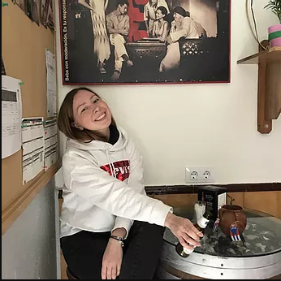

Буду рада сотрудничеству
Относительно недавно я приняла решение начать свое профессиональное развитие в сфере IT. Для этого я уже совершила некоторые шаги, например, посещаю курсы тестировщиков ПО. А также читаю соответствующую литературу и изучаю иные ресурсы по этой и другим тематикам.
Интересующие сферы деятельности:
Тестирование ПО
UX/UI дизайн
BI аналитика
Телефон:
+7 (915) 417-6464
Email:
viktoriia287@gmail.com
Соцсети: